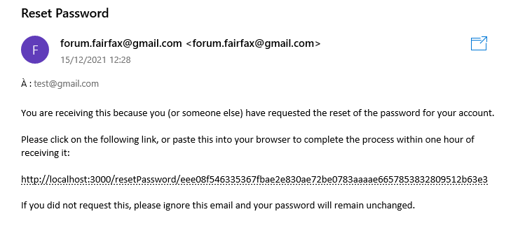

Pour les Ydays de l’année 2021/2022, j’étais dans la startup Fairfax, c’était une nouvelle startup qui avait pour projet de réaliser un blog mélangé avec des éléments de RPG. Dans la startup nous étions 11 développeurs et 2 Marketing. Pour cette première année, l’objectif principal était de refaire le blog en React qui était déjà en partie existant et codé en Go, car c’était un projet de première année des deux chefs de projet. En plus de le refaire, l’objectif était d’ajouter des fonctionnalités afin d’avoir un blog complet.
La première tâche que j’ai dû réaliser était la création de la fonctionnalité de mot de passe oublier. C’était la première fois que je faisais cette fonctionnalité donc dans un premier temps, je me suis renseigné sur comment ça marche de manière générale et comment le sécuriser au maximum, car il existe plein de façons de faire cette fonctionnalité. De plus, je me suis auto formée sur React car j’en avais fait un peu pendant le challenge 48h de l’année 2020/2021 mais je n’avais vu que les bases. Une fois tout cela fait, j’ai choisi d’utiliser la méthode la plus souvent utilisée pour la réinitialisation du mot de passe à savoir envoyer un mail avec un lien qui contient un token unique. Une fois sur le lien, il ne nous reste plus qu’à changer le mot de passe. Voici un exemple de mail envoyer automatiquement lorsque l’on faut une demande de changement de mot de passe.

Une fois cette partie finie, j’ai aidé sur la fonctionnalité de l’ajout d’ami afin que l’on puisse faire une demande d’ami à un autre utilisateur et que l’on puisse voir ses amis ainsi que les amies des autres en allant sur leur profil.
Ce projet m’a permis d’apprendre à faire une fonctionnalité qui est énormément utilisée de façon sécurisée, de plus j’ai pu apprendre à faire un envoie de mail automatiquement grâce au serveur.